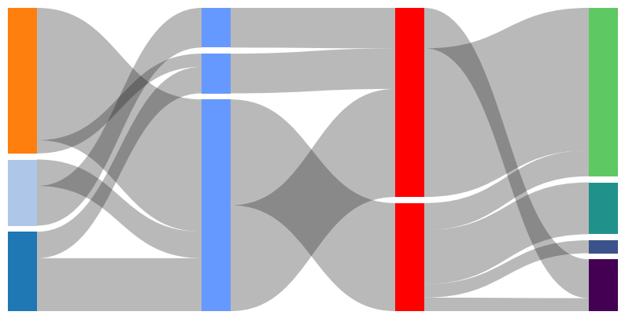
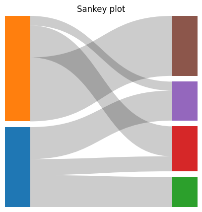

Vignette#
Generate sankey plot with matplotlib.
Input data is structured as sequence of sequence of tuple. The tuple contains 3 entries (<source index>, <target index>, <connection weight>).
[1]:
import matplotlib.pyplot as plt
from matplotlib_sankey import sankey, from_matrix
[2]:
data1 = [
[(0, 2, 20), (0, 1, 10), (3, 4, 15), (3, 2, 10), (5, 1, 5), (5, 2, 50)],
[(2, 6, 40), (1, 6, 15), (2, 7, 40), (4, 6, 15)],
[(7, 8, 5), (7, 9, 5), (7, 10, 20), (7, 11, 10), (6, 11, 55), (6, 8, 15)],
]
[3]:
fig, ax = plt.subplots(figsize=(10, 5))
ax = sankey(
data=data1,
color="tab20",
annotate_columns="index",
ax=ax,
spacing=0.02,
)

[4]:
data2 = [(0, 2, 20), (0, 1, 10), (3, 4, 15), (3, 2, 10), (5, 1, 5), (5, 2, 50)]
[5]:
fig, ax = plt.subplots(figsize=(5, 5))
ax = sankey(
# Sequence arguments must have 3 dimensions
data=[data2],
color="tab10",
annotate_columns="weight",
ax=ax,
title="Sankey plot",
spacing=0.03,
)

Add legend to plot. Labels of legend handles can be overwritten by legend_labels argument.#
[6]:
fig, ax = plt.subplots(figsize=(5, 5))
ax = sankey(
data=[data2],
color="tab10",
annotate_columns="weight_percent",
# ax=ax,
title="Sankey plot",
spacing=0.03,
show_legend=True,
legend_labels=[
"A",
"B",
"C",
"D",
"E",
"F",
],
ax=ax,
annotate_columns_font_kwargs={
"fontsize": 8,
"color": "white",
},
column_labels=["X1", "X2"],
)

Color argument also support continous colormap and scales them to number or columns#
[7]:
fig, ax = plt.subplots(figsize=(10, 5))
ax = sankey(
data=data1,
color="magma",
ax=ax,
spacing=0.02,
ribbon_color="tab:red",
ribbon_alpha=0.3,
)

[8]:
fig, ax = plt.subplots(figsize=(10, 5))
ax = sankey(
data=data1,
# Column-wise color options
color=[
"tab20",
(0.4, 0.6, 1.0),
"red",
"viridis",
],
ax=ax,
spacing=0.02,
ribbon_color=(0.1, 0.1, 0.1),
ribbon_alpha=0.3,
)

Generate input data from connection matrix#
[9]:
data3 = [
[10, 0, 5, 10],
[0, 20, 10, 3],
]
[10]:
fig, ax = plt.subplots(figsize=(5, 5))
ax = sankey(
data=[
# Optional arguments:
from_matrix(data3, source_indicies=["A", "B"]),
],
color="tab10",
# annotate_columns=True,
title="Sankey plot",
spacing=0.03,
ax=ax,
)

[11]:
# Individual definition of colors
fig, ax = plt.subplots(figsize=(5, 5))
sankey(
data=[from_matrix(data3)],
color=[
["red", "green"],
["blue", "black", "orange", "gray"],
],
annotate_columns="weight",
title="Sankey plot",
spacing=0.03,
ax=ax,
show_legend=True,
legend_labels=["A", "B", "C", "D", "E", "F"],
column_labels=["Column 1", "Column 2"],
)
[11]:
<Axes: title={'center': 'Sankey plot'}>

[12]:
from_matrix(
data3,
# Optional arguments
source_indicies=["A", "B"],
target_indicies=["C", "D", "E", "F"],
)
[12]:
[('A', 'C', 10),
('A', 'E', 5),
('A', 'F', 10),
('B', 'D', 20),
('B', 'E', 10),
('B', 'F', 3)]